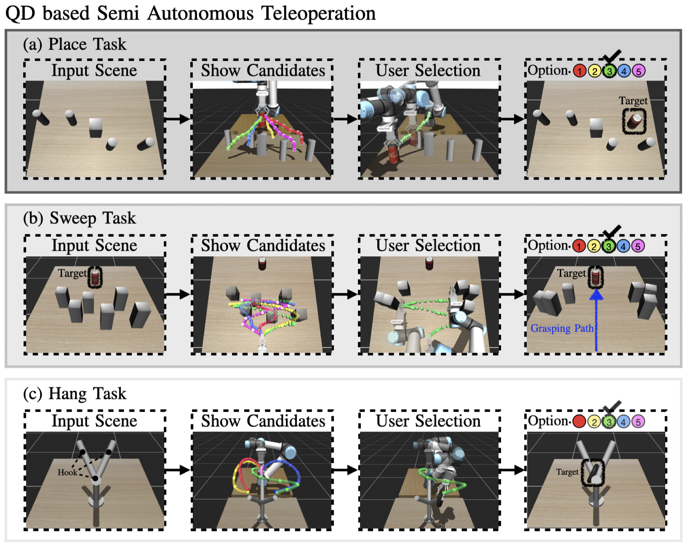
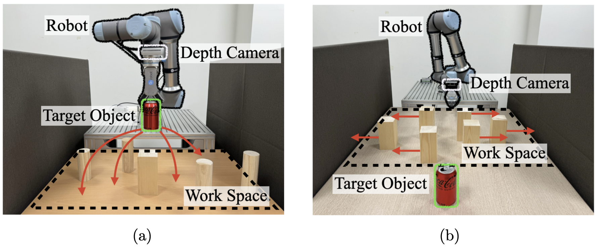

We propose SMORE, a novel semi-autonomous teleoperation framework that allows users to select high-level commands (options) from a diverse set of behaviors generated via reinforcement learning. SMORE integrates a Quality-Diversity (QD) based sampling method (LA-QDPP) and a Mixture Latent Policy Gradient (MLPG) to offer controllable and robust manipulation in cluttered and real-world environments.

The framework uses two core components: (1) LA-QDPP samples context-option pairs to ensure high quality and diversity; (2) MLPG learns multiple modes in the option distribution to support various robot behaviors.

In real-world tasks such as placing and sweeping, SMORE shows higher success rates and faster task completion compared to manual control and baseline RL methods.
| Model | Place SR | Place Diversity | Sweep SR | Hang SR |
|---|---|---|---|---|
| SAC | 100% | 0.021 | 100% | 100% |
| DIAYN | 60% | 0.069 | 80% | 60% |
| DLPG | 80% | 0.095 | 80% | 90% |
| SMORE (Ours) | 100% | 0.120 | 100% | 100% |
@article{park2024smore,
title={Quality-diversity based semi-autonomous teleoperation using reinforcement learning},
author={Park, Sangbeom and Yoon, Taerim and Lee, Joonhyung and Park, Sunghyun and Choi, Sungjoon},
journal={Neural Networks},
volume={179},
pages={106543},
year={2024},
publisher={Elsevier},
doi={10.1016/j.neunet.2024.106543}
}